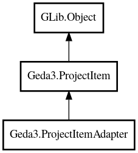

ProjectItemAdapter
Object Hierarchy:

Description:
public class ProjectItemAdapter :
ProjectItem
Adapts the project as an item in the project tree
Content:
Properties:
- public override ProjectIcon icon { protected set; get; }
An icon to display next to the short name
- public Project? project { set; get; }
The project adapted as an item
- public override string tab { protected set; get; }
A short name to appear in widgets
Creation methods:
Inherited Members:
All known members inherited from class Geda3.ProjectItem
All known members inherited from class GLib.Object
- interface_find_property
- interface_install_property
- interface_list_properties
- @new
- new_valist
- newv
- new_with_properties
- add_toggle_ref
- add_weak_pointer
- bind_property
- connect
- constructed
- disconnect
- dispose
- dup_data
- dup_qdata
- force_floating
- freeze_notify
- @get
- get_class
- get_data
- get_property
- get_qdata
- get_type
- getv
- is_floating
- notify_property
- @ref
- ref_sink
- replace_data
- replace_qdata
- remove_toggle_ref
- remove_weak_pointer
- @set
- set_data
- set_data_full
- set_property
- set_qdata
- set_qdata_full
- set_valist
- setv
- steal_data
- steal_qdata
- thaw_notify
- unref
- watch_closure
- weak_ref
- weak_unref
- notify
- ref_count